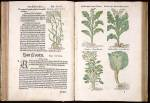

Leonhard Fuchs, Den nieuwen herbarius, dat is, Dboeck vanden cruyden [...] so constelijcken ende natuerlijcken na dleven gefigureert ende geconterfeyt, dat desghelijcs voormaels noyt ghesien en heeft geweest, noch oyt inde printe ghecomen en is. Basel, bij Michiel Isingrin, [1543.] -- (1500 A 2)
Hoe de studie van de botanie zich in de renaissance moest ontwikkelen blijkt uit het kruidenboek van Leonhard Fuchs: de beschrijvingen en afbeeldingen van de planten behoren voortaan op eigen waarneming gebaseerd te zijn. Fuchs’ werk, dat voor het eerst in het Latijn onder de titel De historia stirpium een jaar eerder in Bazel was verschenen, voldeed geheel aan die voorwaarde. Daardoor kreeg zijn boek de waarde van een voorbeeld voor latere botanici als Carolus Clusius en Rembertus Dodonaeus. Fuchs (1501-1566) was in zijn tijd een befaamd geleerde en hoogleraar in de medicijnen te Ingolstadt en Tübingen; thans is hij bij het grotere publiek hoofdzakelijk bekend omdat de fuchsia naar hem genoemd is.
Elke plant of plantesoort
krijgt bij Fuchs, behalve een duidelijke illustratie, ook een uitgebreide beschrijving
mee. Deze bestaat uit de volgende onderdelen: de naam, de verschillende soorten, het
‘faetsoen’ ofwel de uiterlijke kenmerken, ‘plaetse daerse wassen’ ( =
groeien), de tijd waarin ze groeien, ‘die natuer ende complexie’ en ‘die
cracht ende operatie’ ( = medicinale eigenschappen).
Getoond zijn vier koolsoorten, waaronder de rode en de boerenkool.
| vorige pagina | top pagina |